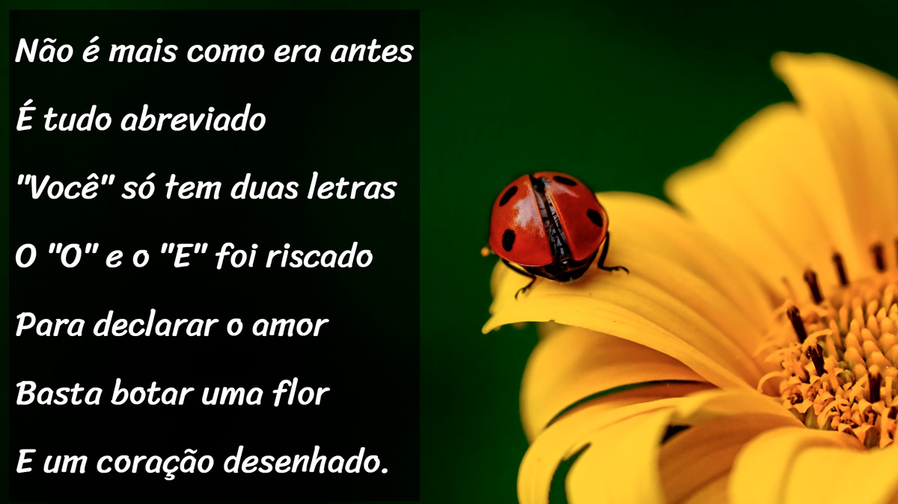
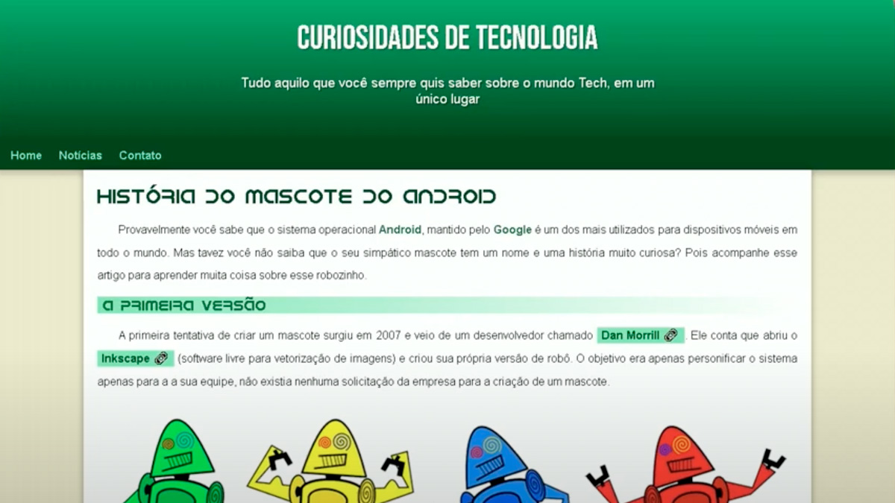

Experiência
Ana Ferreira Consultoria e Serviços
Contadora
1983 - até a presente data
Responsável por gerenciar e supervisionar as atividades contábeis, financeiras e fiscais da empresa, garantindo a conformidade com as normas e regulamentos aplicáveis. Elaborar relatórios financeiros, demonstrativos contábeis e análises de desempenho para auxiliar na tomada de decisões estratégicas.
Ana Ferreira Consultoria e Serviços
Controller
2011 - até a presente data
Responsável por analisar e interpretar dados financeiros, identificar tendências, elaborar relatórios gerenciais e fornecer informações estratégicas para a tomada de decisões. Realizar projeções financeiras, avaliar investimentos e monitorar indicadores de desempenho.
Minhas Skills
Formação
2008 - 2012
Universidade SUESC
Ciências Contábeis
2014 - 2016
Universidade Candido Mendes
Controladoria e Finanças
2026 - 2029
Universidade Estacio de Sá
Analises e Desenvolvimento de Sistemas
Projetos

2026
Projeto de Vídeos
Projeto construido para treinar inserção de vídeos em nosso site
Saiba mais ...
Vídeos do curso em video.

2025
Projeto Cordel
Projeto construido para treinar inserção de cordéis efeitos paralax de imagens
Saiba mais sobre a Literatura de Cordel...
A literatura de cordel é uma importante manifestação da cultura popular brasileira, especialmente presente na região Nordeste. Suas histórias são contadas em versos e geralmente abordam temas como amor, aventura, humor, religião e acontecimentos do cotidiano. Tradicionalmente, os cordéis são impressos em pequenos folhetos, muitas vezes ilustrados com xilogravuras. Essa arte representa a criatividade, a tradição e a riqueza cultural do povo brasileiro. Explore mais sobre essa expressão artística e descubra como ela continua encantando gerações!

2025
Projeto Android
Projeto construido para treinar conteudos e imagens dinamicas
Saiba mais sobre o desenvolvimento Android...
O desenvolvimento Android permite criar aplicativos móveis que facilitam o dia a dia das pessoas, oferecendo soluções práticas, funcionais e inovadoras. Neste projeto, busquei aplicar meus conhecimentos em tecnologia e desenvolvimento de sistemas, explorando conceitos de programação, usabilidade e organização de interfaces. Meu objetivo é aprimorar minhas habilidades, desenvolver soluções criativas e continuar aprendendo sobre o universo do desenvolvimento mobile.